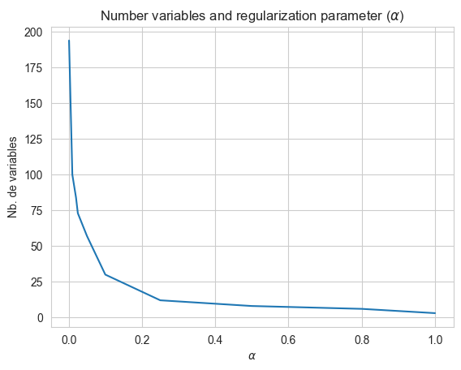

!pip install xlrd# # Sélection de variables avec la méthode LASSO
import pandas as pd
import numpy as np
from sklearn.model_selection import train_test_split
from sklearn.impute import SimpleImputer
from sklearn.preprocessing import OneHotEncoder, StandardScaler
from sklearn.pipeline import Pipeline
from sklearn.compose import ColumnTransformer
from sklearn.linear_model import Lasso, LassoCV
from sklearn.linear_model import LinearRegression
from sklearn.metrics import mean_squared_error, r2_score
import matplotlib.pyplot as plt
from sklearn.linear_model import lasso_path
import seaborn as snsimport requests
url = "https://raw.githubusercontent.com/linogaliana/python-datascientist/main/content/modelisation/get_data.py"
r = requests.get(url, allow_redirects=True)
open("getdata.py", "wb").write(r.content)
import getdata
votes = getdata.create_votes_dataframes()
print('{:,} columns:\n{}'.format(len(list(votes.columns)), list(votes.columns)))
votes.head(1)383 columns:
['STATEFP', 'COUNTYFP', 'COUNTYNS', 'AFFGEOID', 'GEOID', 'NAME', 'LSAD', 'ALAND', 'AWATER', 'geometry', 'FIPS_x', 'state_name', 'county_fips', 'county_name', 'votes_gop', 'votes_dem', 'total_votes', 'diff', 'per_gop', 'per_dem', 'per_point_diff', 'FIPS_y', 'State', 'Area_Name', 'Rural-urban_Continuum Code_2003', 'Rural-urban_Continuum Code_2013', 'Urban_Influence_Code_2003', 'Urban_Influence_Code_2013', 'Economic_typology_2015', 'CENSUS_2010_POP', 'ESTIMATES_BASE_2010', 'POP_ESTIMATE_2010', 'POP_ESTIMATE_2011', 'POP_ESTIMATE_2012', 'POP_ESTIMATE_2013', 'POP_ESTIMATE_2014', 'POP_ESTIMATE_2015', 'POP_ESTIMATE_2016', 'POP_ESTIMATE_2017', 'POP_ESTIMATE_2018', 'POP_ESTIMATE_2019', 'N_POP_CHG_2010', 'N_POP_CHG_2011', 'N_POP_CHG_2012', 'N_POP_CHG_2013', 'N_POP_CHG_2014', 'N_POP_CHG_2015', 'N_POP_CHG_2016', 'N_POP_CHG_2017', 'N_POP_CHG_2018', 'N_POP_CHG_2019', 'Births_2010', 'Births_2011', 'Births_2012', 'Births_2013', 'Births_2014', 'Births_2015', 'Births_2016', 'Births_2017', 'Births_2018', 'Births_2019', 'Deaths_2010', 'Deaths_2011', 'Deaths_2012', 'Deaths_2013', 'Deaths_2014', 'Deaths_2015', 'Deaths_2016', 'Deaths_2017', 'Deaths_2018', 'Deaths_2019', 'NATURAL_INC_2010', 'NATURAL_INC_2011', 'NATURAL_INC_2012', 'NATURAL_INC_2013', 'NATURAL_INC_2014', 'NATURAL_INC_2015', 'NATURAL_INC_2016', 'NATURAL_INC_2017', 'NATURAL_INC_2018', 'NATURAL_INC_2019', 'INTERNATIONAL_MIG_2010', 'INTERNATIONAL_MIG_2011', 'INTERNATIONAL_MIG_2012', 'INTERNATIONAL_MIG_2013', 'INTERNATIONAL_MIG_2014', 'INTERNATIONAL_MIG_2015', 'INTERNATIONAL_MIG_2016', 'INTERNATIONAL_MIG_2017', 'INTERNATIONAL_MIG_2018', 'INTERNATIONAL_MIG_2019', 'DOMESTIC_MIG_2010', 'DOMESTIC_MIG_2011', 'DOMESTIC_MIG_2012', 'DOMESTIC_MIG_2013', 'DOMESTIC_MIG_2014', 'DOMESTIC_MIG_2015', 'DOMESTIC_MIG_2016', 'DOMESTIC_MIG_2017', 'DOMESTIC_MIG_2018', 'DOMESTIC_MIG_2019', 'NET_MIG_2010', 'NET_MIG_2011', 'NET_MIG_2012', 'NET_MIG_2013', 'NET_MIG_2014', 'NET_MIG_2015', 'NET_MIG_2016', 'NET_MIG_2017', 'NET_MIG_2018', 'NET_MIG_2019', 'RESIDUAL_2010', 'RESIDUAL_2011', 'RESIDUAL_2012', 'RESIDUAL_2013', 'RESIDUAL_2014', 'RESIDUAL_2015', 'RESIDUAL_2016', 'RESIDUAL_2017', 'RESIDUAL_2018', 'RESIDUAL_2019', 'GQ_ESTIMATES_BASE_2010', 'GQ_ESTIMATES_2010', 'GQ_ESTIMATES_2011', 'GQ_ESTIMATES_2012', 'GQ_ESTIMATES_2013', 'GQ_ESTIMATES_2014', 'GQ_ESTIMATES_2015', 'GQ_ESTIMATES_2016', 'GQ_ESTIMATES_2017', 'GQ_ESTIMATES_2018', 'GQ_ESTIMATES_2019', 'R_birth_2011', 'R_birth_2012', 'R_birth_2013', 'R_birth_2014', 'R_birth_2015', 'R_birth_2016', 'R_birth_2017', 'R_birth_2018', 'R_birth_2019', 'R_death_2011', 'R_death_2012', 'R_death_2013', 'R_death_2014', 'R_death_2015', 'R_death_2016', 'R_death_2017', 'R_death_2018', 'R_death_2019', 'R_NATURAL_INC_2011', 'R_NATURAL_INC_2012', 'R_NATURAL_INC_2013', 'R_NATURAL_INC_2014', 'R_NATURAL_INC_2015', 'R_NATURAL_INC_2016', 'R_NATURAL_INC_2017', 'R_NATURAL_INC_2018', 'R_NATURAL_INC_2019', 'R_INTERNATIONAL_MIG_2011', 'R_INTERNATIONAL_MIG_2012', 'R_INTERNATIONAL_MIG_2013', 'R_INTERNATIONAL_MIG_2014', 'R_INTERNATIONAL_MIG_2015', 'R_INTERNATIONAL_MIG_2016', 'R_INTERNATIONAL_MIG_2017', 'R_INTERNATIONAL_MIG_2018', 'R_INTERNATIONAL_MIG_2019', 'R_DOMESTIC_MIG_2011', 'R_DOMESTIC_MIG_2012', 'R_DOMESTIC_MIG_2013', 'R_DOMESTIC_MIG_2014', 'R_DOMESTIC_MIG_2015', 'R_DOMESTIC_MIG_2016', 'R_DOMESTIC_MIG_2017', 'R_DOMESTIC_MIG_2018', 'R_DOMESTIC_MIG_2019', 'R_NET_MIG_2011', 'R_NET_MIG_2012', 'R_NET_MIG_2013', 'R_NET_MIG_2014', 'R_NET_MIG_2015', 'R_NET_MIG_2016', 'R_NET_MIG_2017', 'R_NET_MIG_2018', 'R_NET_MIG_2019', 'Area_Name', '2003 Rural-urban Continuum Code', '2003 Urban Influence Code', '2013 Rural-urban Continuum Code', '2013 Urban Influence Code', 'Less than a high school diploma, 1970', 'High school diploma only, 1970', 'Some college (1-3 years), 1970', 'Four years of college or higher, 1970', 'Percent of adults with less than a high school diploma, 1970', 'Percent of adults with a high school diploma only, 1970', 'Percent of adults completing some college (1-3 years), 1970', 'Percent of adults completing four years of college or higher, 1970', 'Less than a high school diploma, 1980', 'High school diploma only, 1980', 'Some college (1-3 years), 1980', 'Four years of college or higher, 1980', 'Percent of adults with less than a high school diploma, 1980', 'Percent of adults with a high school diploma only, 1980', 'Percent of adults completing some college (1-3 years), 1980', 'Percent of adults completing four years of college or higher, 1980', 'Less than a high school diploma, 1990', 'High school diploma only, 1990', "Some college or associate's degree, 1990", "Bachelor's degree or higher, 1990", 'Percent of adults with less than a high school diploma, 1990', 'Percent of adults with a high school diploma only, 1990', "Percent of adults completing some college or associate's degree, 1990", "Percent of adults with a bachelor's degree or higher, 1990", 'Less than a high school diploma, 2000', 'High school diploma only, 2000', "Some college or associate's degree, 2000", "Bachelor's degree or higher, 2000", 'Percent of adults with less than a high school diploma, 2000', 'Percent of adults with a high school diploma only, 2000', "Percent of adults completing some college or associate's degree, 2000", "Percent of adults with a bachelor's degree or higher, 2000", 'Less than a high school diploma, 2015-19', 'High school diploma only, 2015-19', "Some college or associate's degree, 2015-19", "Bachelor's degree or higher, 2015-19", 'Percent of adults with less than a high school diploma, 2015-19', 'Percent of adults with a high school diploma only, 2015-19', "Percent of adults completing some college or associate's degree, 2015-19", "Percent of adults with a bachelor's degree or higher, 2015-19", 'Area_Name', 'Rural_urban_continuum_code_2013', 'Urban_influence_code_2013', 'Metro_2013', 'Civilian_labor_force_2000', 'Employed_2000', 'Unemployed_2000', 'Unemployment_rate_2000', 'Civilian_labor_force_2001', 'Employed_2001', 'Unemployed_2001', 'Unemployment_rate_2001', 'Civilian_labor_force_2002', 'Employed_2002', 'Unemployed_2002', 'Unemployment_rate_2002', 'Civilian_labor_force_2003', 'Employed_2003', 'Unemployed_2003', 'Unemployment_rate_2003', 'Civilian_labor_force_2004', 'Employed_2004', 'Unemployed_2004', 'Unemployment_rate_2004', 'Civilian_labor_force_2005', 'Employed_2005', 'Unemployed_2005', 'Unemployment_rate_2005', 'Civilian_labor_force_2006', 'Employed_2006', 'Unemployed_2006', 'Unemployment_rate_2006', 'Civilian_labor_force_2007', 'Employed_2007', 'Unemployed_2007', 'Unemployment_rate_2007', 'Civilian_labor_force_2008', 'Employed_2008', 'Unemployed_2008', 'Unemployment_rate_2008', 'Civilian_labor_force_2009', 'Employed_2009', 'Unemployed_2009', 'Unemployment_rate_2009', 'Civilian_labor_force_2010', 'Employed_2010', 'Unemployed_2010', 'Unemployment_rate_2010', 'Civilian_labor_force_2011', 'Employed_2011', 'Unemployed_2011', 'Unemployment_rate_2011', 'Civilian_labor_force_2012', 'Employed_2012', 'Unemployed_2012', 'Unemployment_rate_2012', 'Civilian_labor_force_2013', 'Employed_2013', 'Unemployed_2013', 'Unemployment_rate_2013', 'Civilian_labor_force_2014', 'Employed_2014', 'Unemployed_2014', 'Unemployment_rate_2014', 'Civilian_labor_force_2015', 'Employed_2015', 'Unemployed_2015', 'Unemployment_rate_2015', 'Civilian_labor_force_2016', 'Employed_2016', 'Unemployed_2016', 'Unemployment_rate_2016', 'Civilian_labor_force_2017', 'Employed_2017', 'Unemployed_2017', 'Unemployment_rate_2017', 'Civilian_labor_force_2018', 'Employed_2018', 'Unemployed_2018', 'Unemployment_rate_2018', 'Civilian_labor_force_2019', 'Employed_2019', 'Unemployed_2019', 'Unemployment_rate_2019', 'Median_Household_Income_2019', 'Med_HH_Income_Percent_of_State_Total_2019', 'Area_Name', 'Rural-urban_Continuum_Code_2003', 'Urban_Influence_Code_2003', 'Rural-urban_Continuum_Code_2013', 'Urban_Influence_Code_2013', 'POVALL_2019', 'CI90LBALL_2019', 'CI90UBALL_2019', 'PCTPOVALL_2019', 'CI90LBALLP_2019', 'CI90UBALLP_2019', 'POV017_2019', 'CI90LB017_2019', 'CI90UB017_2019', 'PCTPOV017_2019', 'CI90LB017P_2019', 'CI90UB017P_2019', 'POV517_2019', 'CI90LB517_2019', 'CI90UB517_2019', 'PCTPOV517_2019', 'CI90LB517P_2019', 'CI90UB517P_2019', 'MEDHHINC_2019', 'CI90LBINC_2019', 'CI90UBINC_2019', 'POV04_2019', 'CI90LB04_2019', 'CI90UB04_2019', 'PCTPOV04_2019', 'CI90LB04P_2019', 'CI90UB04P_2019', 'FIPS', 'candidatevotes_2000_democrat', 'candidatevotes_2000_green', 'candidatevotes_2000_other', 'candidatevotes_2000_republican', 'candidatevotes_2004_democrat', 'candidatevotes_2004_other', 'candidatevotes_2004_republican', 'candidatevotes_2008_democrat', 'candidatevotes_2008_other', 'candidatevotes_2008_republican', 'candidatevotes_2012_democrat', 'candidatevotes_2012_other', 'candidatevotes_2012_republican', 'candidatevotes_2016_democrat', 'candidatevotes_2016_other', 'candidatevotes_2016_republican', 'share_2000_democrat', 'share_2000_green', 'share_2000_other', 'share_2000_republican', 'share_2004_democrat', 'share_2004_other', 'share_2004_republican', 'share_2008_democrat', 'share_2008_other', 'share_2008_republican', 'share_2012_democrat', 'share_2012_other', 'share_2012_republican', 'share_2016_democrat', 'share_2016_other', 'share_2016_republican', 'winner']| STATEFP | COUNTYFP | COUNTYNS | AFFGEOID | GEOID | NAME | LSAD | ALAND | AWATER | geometry | ... | share_2008_democrat | share_2008_other | share_2008_republican | share_2012_democrat | share_2012_other | share_2012_republican | share_2016_democrat | share_2016_other | share_2016_republican | winner | |
|---|---|---|---|---|---|---|---|---|---|---|---|---|---|---|---|---|---|---|---|---|---|
| 0 | 29 | 227 | 00758566 | 0500000US29227 | 29227 | Worth | 06 | 690564983 | 493903 | POLYGON ((-94.63203 40.57176, -94.53388 40.570... | ... | 0.363714 | 0.034072 | 0.602215 | 0.325382 | 0.041031 | 0.633588 | 0.186424 | 0.041109 | 0.772467 | republican |
1 rows × 383 columns
# # Analyse des variables prédictives du vote républicain:
# # Retrait des variables de scores des concurrents (liées au score républicain)
df2 = pd.DataFrame(votes.drop(columns="geometry"))
df2 = df2.loc[:,~df2.columns.str.endswith(
("_democrat", "_green", "_other", "winner", "per_point_diff", "per_dem")
),
]
df2 = df2.loc[:, ~df2.columns.duplicated()]
df2.head(1)| STATEFP | COUNTYFP | COUNTYNS | AFFGEOID | GEOID | NAME | LSAD | ALAND | AWATER | FIPS_x | ... | candidatevotes_2000_republican | candidatevotes_2004_republican | candidatevotes_2008_republican | candidatevotes_2012_republican | candidatevotes_2016_republican | share_2000_republican | share_2004_republican | share_2008_republican | share_2012_republican | share_2016_republican | |
|---|---|---|---|---|---|---|---|---|---|---|---|---|---|---|---|---|---|---|---|---|---|
| 0 | 29 | 227 | 00758566 | 0500000US29227 | 29227 | Worth | 06 | 690564983 | 493903 | 29227 | ... | 651.0 | 691.0 | 707.0 | 664.0 | 808.0 | 0.562176 | 0.610424 | 0.602215 | 0.633588 | 0.772467 |
1 rows × 352 columns
# # Exercice 1: 'per_gop': % vote républicain ('gop' = "Grand Old Party")
# # 1.1 Remplacer les infinis par des NaN
df2.replace([np.inf, -np.inf], np.nan, inplace=True)
# # 1.2. Échantillon d'entraînement et échantillon test
X_train, X_test, y_train, y_test = train_test_split(
df2.drop(["per_gop"], axis=1), 100 * df2[["per_gop"]], test_size=0.2, random_state=0
)
# # 1.3. Création de pipeline pour l'imputation de valeurs numériques et catégorielles
# # Sélction des variables numériques et catégorielles:
numerical_features = X_train.select_dtypes(include='number').columns.tolist()
categorical_features = X_train.select_dtypes(exclude=['number', 'datetime']).columns.tolist() # on rajoute 'datetime' pour l'exemple
# # Création des pipelines:
numeric_pipeline = Pipeline(
steps=[("impute", SimpleImputer(strategy="mean")), ("scale", StandardScaler())]
)
categorical_pipeline = Pipeline(
steps=[
("impute", SimpleImputer(strategy="most_frequent")),
("one-hot", OneHotEncoder(handle_unknown="ignore", sparse_output=False)),
]
)
preprocessor = ColumnTransformer(
transformers=[
("number", numeric_pipeline, numerical_features),
("category", categorical_pipeline, categorical_features),
]
)
# # 1.4. Estimateur LASSO:
model = Lasso(fit_intercept=True, alpha=0.1)
lasso_pipeline = Pipeline(steps=[("preprocess", preprocessor), ("model", model)])
lasso_pipeline.fit(X_train, y_train)
# # 1.5. Affichage des coefficients:
lasso_model = lasso_pipeline["model"]
# Get feature names from the preprocessing step
features_preprocessing = lasso_pipeline['preprocess'].get_feature_names_out()
# Extract selected features based on non-zero coefficients
features_selec = pd.Series(features_preprocessing[np.abs(lasso_model.coef_) > 0])
features_selec
C:\Users\dmarin\AppData\Local\Programs\Python\Python311\Lib\site-packages\sklearn\impute\_base.py:598: UserWarning: Skipping features without any observed values: ['POV04_2019' 'CI90LB04_2019' 'CI90UB04_2019' 'PCTPOV04_2019'
'CI90LB04P_2019' 'CI90UB04P_2019']. At least one non-missing value is needed for imputation with strategy='mean'.
warnings.warn(0 number__ALAND
1 number__FIPS_y
2 number__INTERNATIONAL_MIG_2017
3 number__DOMESTIC_MIG_2014
4 number__DOMESTIC_MIG_2017
5 number__RESIDUAL_2010
6 number__RESIDUAL_2019
7 number__R_death_2012
8 number__R_death_2019
9 number__R_NATURAL_INC_2019
10 number__R_INTERNATIONAL_MIG_2011
11 number__R_DOMESTIC_MIG_2012
12 number__Percent of adults with a bachelor's de...
13 number__Percent of adults with a high school d...
14 number__Percent of adults with a bachelor's de...
15 number__Percent of adults with a bachelor's de...
16 number__Rural_urban_continuum_code_2013
17 number__Metro_2013
18 number__Unemployment_rate_2002
19 number__Unemployment_rate_2003
20 number__Unemployment_rate_2012
21 number__Rural-urban_Continuum_Code_2003
22 number__Rural-urban_Continuum_Code_2013
23 number__CI90LB517P_2019
24 number__candidatevotes_2016_republican
25 number__share_2012_republican
26 number__share_2016_republican
dtype: object# # 1.6. Corrélation entre les variables sélectionnées:
features_selected = features_selec.loc[
features_selec.str.startswith("number__")
].str.replace("number__", "", regex=True)
corr = df2.loc[:, features_selected].corr()
plt.figure()
p = corr.style.background_gradient(cmap="coolwarm", axis=None).format("{:.2f}")
p| ALAND | FIPS_y | INTERNATIONAL_MIG_2017 | DOMESTIC_MIG_2014 | DOMESTIC_MIG_2017 | RESIDUAL_2010 | RESIDUAL_2019 | R_death_2012 | R_death_2019 | R_NATURAL_INC_2019 | R_INTERNATIONAL_MIG_2011 | R_DOMESTIC_MIG_2012 | Percent of adults with a bachelor's degree or higher, 1990 | Percent of adults with a high school diploma only, 2000 | Percent of adults with a bachelor's degree or higher, 2000 | Percent of adults with a bachelor's degree or higher, 2015-19 | Rural_urban_continuum_code_2013 | Metro_2013 | Unemployment_rate_2002 | Unemployment_rate_2003 | Unemployment_rate_2012 | Rural-urban_Continuum_Code_2003 | Rural-urban_Continuum_Code_2013 | CI90LB517P_2019 | candidatevotes_2016_republican | share_2012_republican | share_2016_republican | |
|---|---|---|---|---|---|---|---|---|---|---|---|---|---|---|---|---|---|---|---|---|---|---|---|---|---|---|---|
| ALAND | 1.00 | -0.01 | 0.03 | 0.05 | 0.06 | -0.02 | 0.12 | -0.11 | -0.12 | 0.10 | -0.03 | 0.03 | 0.06 | -0.17 | 0.04 | -0.00 | 0.08 | -0.08 | 0.06 | 0.05 | 0.02 | 0.08 | 0.08 | 0.01 | 0.11 | 0.03 | -0.04 |
| FIPS_y | -0.01 | 1.00 | -0.04 | 0.01 | 0.01 | -0.00 | -0.05 | 0.01 | -0.03 | 0.01 | -0.00 | 0.11 | 0.03 | 0.01 | 0.03 | 0.04 | 0.01 | -0.01 | -0.01 | -0.01 | -0.20 | 0.01 | 0.01 | -0.09 | -0.06 | 0.05 | 0.05 |
| INTERNATIONAL_MIG_2017 | 0.03 | -0.04 | 1.00 | -0.28 | -0.56 | -0.15 | 0.27 | -0.19 | -0.17 | 0.15 | 0.44 | 0.05 | 0.27 | -0.25 | 0.26 | 0.27 | -0.22 | 0.20 | 0.01 | -0.01 | 0.00 | -0.22 | -0.22 | -0.00 | 0.66 | -0.23 | -0.29 |
| DOMESTIC_MIG_2014 | 0.05 | 0.01 | -0.28 | 1.00 | 0.84 | -0.05 | 0.10 | -0.02 | -0.03 | -0.01 | -0.10 | 0.16 | 0.01 | -0.02 | 0.03 | 0.04 | -0.03 | 0.04 | -0.05 | -0.06 | -0.05 | -0.03 | -0.03 | -0.11 | -0.03 | 0.13 | 0.10 |
| DOMESTIC_MIG_2017 | 0.06 | 0.01 | -0.56 | 0.84 | 1.00 | 0.04 | 0.02 | 0.02 | 0.02 | -0.05 | -0.19 | 0.10 | -0.05 | 0.04 | -0.03 | -0.02 | -0.00 | 0.01 | -0.04 | -0.05 | -0.02 | 0.00 | -0.00 | -0.10 | -0.21 | 0.16 | 0.15 |
| RESIDUAL_2010 | -0.02 | -0.00 | -0.15 | -0.05 | 0.04 | 1.00 | 0.09 | -0.06 | -0.07 | 0.09 | -0.03 | 0.03 | -0.03 | -0.02 | -0.03 | -0.02 | 0.01 | -0.01 | 0.02 | 0.02 | 0.01 | 0.01 | 0.01 | 0.03 | -0.15 | 0.02 | 0.02 |
| RESIDUAL_2019 | 0.12 | -0.05 | 0.27 | 0.10 | 0.02 | 0.09 | 1.00 | -0.06 | -0.06 | 0.05 | 0.08 | 0.07 | 0.03 | -0.09 | 0.03 | 0.02 | -0.02 | 0.03 | 0.01 | -0.00 | 0.02 | -0.02 | -0.02 | 0.01 | 0.27 | 0.02 | -0.01 |
| R_death_2012 | -0.11 | 0.01 | -0.19 | -0.02 | 0.02 | -0.06 | -0.06 | 1.00 | 0.75 | -0.62 | -0.33 | -0.11 | -0.49 | 0.43 | -0.50 | -0.47 | 0.46 | -0.41 | 0.14 | 0.16 | 0.08 | 0.45 | 0.46 | 0.26 | -0.28 | 0.22 | 0.38 |
| R_death_2019 | -0.12 | -0.03 | -0.17 | -0.03 | 0.02 | -0.07 | -0.06 | 0.75 | 1.00 | -0.81 | -0.35 | -0.12 | -0.49 | 0.42 | -0.50 | -0.47 | 0.28 | -0.29 | 0.30 | 0.31 | 0.32 | 0.28 | 0.28 | 0.38 | -0.22 | 0.07 | 0.23 |
| R_NATURAL_INC_2019 | 0.10 | 0.01 | 0.15 | -0.01 | -0.05 | 0.09 | 0.05 | -0.62 | -0.81 | 1.00 | 0.32 | 0.11 | 0.31 | -0.35 | 0.30 | 0.27 | -0.24 | 0.22 | -0.21 | -0.22 | -0.28 | -0.24 | -0.24 | -0.18 | 0.18 | -0.04 | -0.19 |
| R_INTERNATIONAL_MIG_2011 | -0.03 | -0.00 | 0.44 | -0.10 | -0.19 | -0.03 | 0.08 | -0.33 | -0.35 | 0.32 | 1.00 | 0.08 | 0.48 | -0.39 | 0.47 | 0.43 | -0.23 | 0.21 | -0.12 | -0.13 | -0.14 | -0.23 | -0.23 | -0.09 | 0.31 | -0.28 | -0.37 |
| R_DOMESTIC_MIG_2012 | 0.03 | 0.11 | 0.05 | 0.16 | 0.10 | 0.03 | 0.07 | -0.11 | -0.12 | 0.11 | 0.08 | 1.00 | 0.20 | -0.15 | 0.22 | 0.27 | -0.13 | 0.14 | -0.16 | -0.19 | -0.21 | -0.13 | -0.13 | -0.23 | 0.13 | 0.08 | 0.03 |
| Percent of adults with a bachelor's degree or higher, 1990 | 0.06 | 0.03 | 0.27 | 0.01 | -0.05 | -0.03 | 0.03 | -0.49 | -0.49 | 0.31 | 0.48 | 0.20 | 1.00 | -0.66 | 0.97 | 0.91 | -0.37 | 0.35 | -0.32 | -0.33 | -0.27 | -0.37 | -0.37 | -0.36 | 0.40 | -0.34 | -0.53 |
| Percent of adults with a high school diploma only, 2000 | -0.17 | 0.01 | -0.25 | -0.02 | 0.04 | -0.02 | -0.09 | 0.43 | 0.42 | -0.35 | -0.39 | -0.15 | -0.66 | 1.00 | -0.65 | -0.58 | 0.25 | -0.25 | 0.02 | 0.06 | 0.02 | 0.25 | 0.25 | -0.01 | -0.32 | 0.25 | 0.48 |
| Percent of adults with a bachelor's degree or higher, 2000 | 0.04 | 0.03 | 0.26 | 0.03 | -0.03 | -0.03 | 0.03 | -0.50 | -0.50 | 0.30 | 0.47 | 0.22 | 0.97 | -0.65 | 1.00 | 0.95 | -0.38 | 0.37 | -0.36 | -0.36 | -0.30 | -0.38 | -0.38 | -0.41 | 0.39 | -0.32 | -0.51 |
| Percent of adults with a bachelor's degree or higher, 2015-19 | -0.00 | 0.04 | 0.27 | 0.04 | -0.02 | -0.02 | 0.02 | -0.47 | -0.47 | 0.27 | 0.43 | 0.27 | 0.91 | -0.58 | 0.95 | 1.00 | -0.41 | 0.41 | -0.38 | -0.38 | -0.31 | -0.41 | -0.41 | -0.47 | 0.40 | -0.31 | -0.49 |
| Rural_urban_continuum_code_2013 | 0.08 | 0.01 | -0.22 | -0.03 | -0.00 | 0.01 | -0.02 | 0.46 | 0.28 | -0.24 | -0.23 | -0.13 | -0.37 | 0.25 | -0.38 | -0.41 | 1.00 | -0.87 | 0.04 | 0.05 | -0.07 | 0.93 | 1.00 | 0.18 | -0.44 | 0.28 | 0.38 |
| Metro_2013 | -0.08 | -0.01 | 0.20 | 0.04 | 0.01 | -0.01 | 0.03 | -0.41 | -0.29 | 0.22 | 0.21 | 0.14 | 0.35 | -0.25 | 0.37 | 0.41 | -0.87 | 1.00 | -0.10 | -0.12 | -0.00 | -0.81 | -0.87 | -0.19 | 0.41 | -0.21 | -0.31 |
| Unemployment_rate_2002 | 0.06 | -0.01 | 0.01 | -0.05 | -0.04 | 0.02 | 0.01 | 0.14 | 0.30 | -0.21 | -0.12 | -0.16 | -0.32 | 0.02 | -0.36 | -0.38 | 0.04 | -0.10 | 1.00 | 0.94 | 0.76 | 0.04 | 0.04 | 0.53 | -0.02 | -0.24 | -0.18 |
| Unemployment_rate_2003 | 0.05 | -0.01 | -0.01 | -0.06 | -0.05 | 0.02 | -0.00 | 0.16 | 0.31 | -0.22 | -0.13 | -0.19 | -0.33 | 0.06 | -0.36 | -0.38 | 0.05 | -0.12 | 0.94 | 1.00 | 0.74 | 0.05 | 0.05 | 0.51 | -0.04 | -0.24 | -0.16 |
| Unemployment_rate_2012 | 0.02 | -0.20 | 0.00 | -0.05 | -0.02 | 0.01 | 0.02 | 0.08 | 0.32 | -0.28 | -0.14 | -0.21 | -0.27 | 0.02 | -0.30 | -0.31 | -0.07 | -0.00 | 0.76 | 0.74 | 1.00 | -0.07 | -0.07 | 0.55 | 0.02 | -0.32 | -0.25 |
| Rural-urban_Continuum_Code_2003 | 0.08 | 0.01 | -0.22 | -0.03 | 0.00 | 0.01 | -0.02 | 0.45 | 0.28 | -0.24 | -0.23 | -0.13 | -0.37 | 0.25 | -0.38 | -0.41 | 0.93 | -0.81 | 0.04 | 0.05 | -0.07 | 1.00 | 0.93 | 0.17 | -0.45 | 0.29 | 0.39 |
| Rural-urban_Continuum_Code_2013 | 0.08 | 0.01 | -0.22 | -0.03 | -0.00 | 0.01 | -0.02 | 0.46 | 0.28 | -0.24 | -0.23 | -0.13 | -0.37 | 0.25 | -0.38 | -0.41 | 1.00 | -0.87 | 0.04 | 0.05 | -0.07 | 0.93 | 1.00 | 0.18 | -0.44 | 0.28 | 0.38 |
| CI90LB517P_2019 | 0.01 | -0.09 | -0.00 | -0.11 | -0.10 | 0.03 | 0.01 | 0.26 | 0.38 | -0.18 | -0.09 | -0.23 | -0.36 | -0.01 | -0.41 | -0.47 | 0.18 | -0.19 | 0.53 | 0.51 | 0.55 | 0.17 | 0.18 | 1.00 | -0.09 | -0.17 | -0.11 |
| candidatevotes_2016_republican | 0.11 | -0.06 | 0.66 | -0.03 | -0.21 | -0.15 | 0.27 | -0.28 | -0.22 | 0.18 | 0.31 | 0.13 | 0.40 | -0.32 | 0.39 | 0.40 | -0.44 | 0.41 | -0.02 | -0.04 | 0.02 | -0.45 | -0.44 | -0.09 | 1.00 | -0.22 | -0.32 |
| share_2012_republican | 0.03 | 0.05 | -0.23 | 0.13 | 0.16 | 0.02 | 0.02 | 0.22 | 0.07 | -0.04 | -0.28 | 0.08 | -0.34 | 0.25 | -0.32 | -0.31 | 0.28 | -0.21 | -0.24 | -0.24 | -0.32 | 0.29 | 0.28 | -0.17 | -0.22 | 1.00 | 0.93 |
| share_2016_republican | -0.04 | 0.05 | -0.29 | 0.10 | 0.15 | 0.02 | -0.01 | 0.38 | 0.23 | -0.19 | -0.37 | 0.03 | -0.53 | 0.48 | -0.51 | -0.49 | 0.38 | -0.31 | -0.18 | -0.16 | -0.25 | 0.39 | 0.38 | -0.11 | -0.32 | 0.93 | 1.00 |
<Figure size 640x480 with 0 Axes># # 1.7. Comparaison de performance avec un modèle ayant plus de variables:
def print_regression_metrics(y_true, y_pred, model_name=""):
"""
Print RMSE and R^2 for regression analysis.
Parameters:
- y_true (array-like): The true target values.
- y_pred (array-like): The predicted target values.
- model_name (str): Name of the regression model. Default is an empty string.
"""
rmse = mean_squared_error(y_true, y_pred, squared=False)
rsq = r2_score(y_true, y_pred)
print(f"{model_name} Regression:")
print(f"RMSE: {rmse:.4f}")
print(f"R^2: {rsq:.4f}")
return rmse, rsq
# # Régression parcimonieuse
lasso_pipeline = Pipeline(
steps=[
(
"preprocess",
ColumnTransformer(
transformers=[("number", numeric_pipeline, numerical_features)]
),
),
("model", Lasso()),
]
)
lasso_pipeline.fit(X_train, y_train)
y_pred_parci = lasso_pipeline.predict(X_test)
rmse_parci, rsq_parci = print_regression_metrics(
y_test, y_pred_parci, "Régression parcimonieuse"
)
# # Régression non parcimonieuse
ols_pipeline = Pipeline(
steps=[
(
"preprocess",
ColumnTransformer(
transformers=[("number", numeric_pipeline, numerical_features)]
),
),
("scaler", StandardScaler()), # Add scaling for LinearRegression
("model", LinearRegression()),
]
)
ols_pipeline.fit(X_train, y_train)
y_pred_nonparci = ols_pipeline.predict(X_test)
rmse_nonparci, rsq_nonparci = print_regression_metrics(
y_test, y_pred_nonparci, "Régression non parcimonieuse"
)
df_comp = pd.DataFrame(
{
"parcimonieux": [rmse_parci, rsq_parci, len(features_selected)],
"non parcimonieux": [
rmse_nonparci,
rsq_nonparci,
ols_pipeline[-1].coef_.shape[1] + 1,
],
},
index=["RMSE", "R2", "Nombre de paramètres"],
)
df_compC:\Users\dmarin\AppData\Local\Programs\Python\Python311\Lib\site-packages\sklearn\impute\_base.py:598: UserWarning: Skipping features without any observed values: ['POV04_2019' 'CI90LB04_2019' 'CI90UB04_2019' 'PCTPOV04_2019'
'CI90LB04P_2019' 'CI90UB04P_2019']. At least one non-missing value is needed for imputation with strategy='mean'.
warnings.warn(
C:\Users\dmarin\AppData\Local\Programs\Python\Python311\Lib\site-packages\sklearn\impute\_base.py:598: UserWarning: Skipping features without any observed values: ['POV04_2019' 'CI90LB04_2019' 'CI90UB04_2019' 'PCTPOV04_2019'
'CI90LB04P_2019' 'CI90UB04P_2019']. At least one non-missing value is needed for imputation with strategy='mean'.
warnings.warn(
C:\Users\dmarin\AppData\Local\Programs\Python\Python311\Lib\site-packages\sklearn\metrics\_regression.py:492: FutureWarning: 'squared' is deprecated in version 1.4 and will be removed in 1.6. To calculate the root mean squared error, use the function'root_mean_squared_error'.
warnings.warn(
C:\Users\dmarin\AppData\Local\Programs\Python\Python311\Lib\site-packages\sklearn\impute\_base.py:598: UserWarning: Skipping features without any observed values: ['POV04_2019' 'CI90LB04_2019' 'CI90UB04_2019' 'PCTPOV04_2019'
'CI90LB04P_2019' 'CI90UB04P_2019']. At least one non-missing value is needed for imputation with strategy='mean'.
warnings.warn(Régression parcimonieuse Regression:
RMSE: 2.7036
R^2: 0.9727
Régression non parcimonieuse Regression:
RMSE: 2.3090
R^2: 0.9801C:\Users\dmarin\AppData\Local\Programs\Python\Python311\Lib\site-packages\sklearn\impute\_base.py:598: UserWarning: Skipping features without any observed values: ['POV04_2019' 'CI90LB04_2019' 'CI90UB04_2019' 'PCTPOV04_2019'
'CI90LB04P_2019' 'CI90UB04P_2019']. At least one non-missing value is needed for imputation with strategy='mean'.
warnings.warn(
C:\Users\dmarin\AppData\Local\Programs\Python\Python311\Lib\site-packages\sklearn\metrics\_regression.py:492: FutureWarning: 'squared' is deprecated in version 1.4 and will be removed in 1.6. To calculate the root mean squared error, use the function'root_mean_squared_error'.
warnings.warn(| parcimonieux | non parcimonieux | |
|---|---|---|
| RMSE | 2.703622 | 2.309011 |
| R2 | 0.972728 | 0.980108 |
| Nombre de paramètres | 27.000000 | 332.000000 |
# # Exercice 2: rôle de \alpha sur les variables sélectionnées
# # Liste de paramètres \alpha:
my_alphas = np.array([0.001, 0.01, 0.02, 0.025, 0.05, 0.1, 0.25, 0.5, 0.8, 1.0])
# # Séparation des données entrainement et test:
df2.replace([np.inf, -np.inf], np.nan, inplace=True)
X_train, X_test, y_train, y_test = train_test_split(
df2.drop(["per_gop"], axis=1), 100 * df2[["per_gop"]], test_size=0.2, random_state=0
)
numerical_features = X_train.select_dtypes(include="number").columns.tolist()
categorical_features = X_train.select_dtypes(exclude=['number', 'datetime']).columns.tolist()
numeric_pipeline = Pipeline(
steps=[("impute", SimpleImputer(strategy="mean")), ("scale", StandardScaler())]
)
preprocessed_features = pd.DataFrame(
numeric_pipeline.fit_transform(X_train.drop(columns=categorical_features))
)
alpha_for_path, coefs_lasso, _ = lasso_path(
preprocessed_features, y_train, alphas=my_alphas
)
print('coefs_lasso: {}'.format(coefs_lasso))
nb_non_zero = np.apply_along_axis(func1d=np.count_nonzero, arr=coefs_lasso, axis=0)
nb_non_zero = pd.DataFrame(nb_non_zero).sum(axis=0)
# graphique
sns.set_style("whitegrid")
plt.figure()
p = sns.lineplot(y=nb_non_zero, x=alpha_for_path)
p.set(
title=r"Number variables and regularization parameter ($\alpha$)",
xlabel=r"$\alpha$",
ylabel="Nb. de variables",
)C:\Users\dmarin\AppData\Local\Programs\Python\Python311\Lib\site-packages\sklearn\impute\_base.py:598: UserWarning: Skipping features without any observed values: ['POV04_2019' 'CI90LB04_2019' 'CI90UB04_2019' 'PCTPOV04_2019'
'CI90LB04P_2019' 'CI90UB04P_2019']. At least one non-missing value is needed for imputation with strategy='mean'.
warnings.warn(
C:\Users\dmarin\AppData\Local\Programs\Python\Python311\Lib\site-packages\sklearn\linear_model\_coordinate_descent.py:675: ConvergenceWarning: Objective did not converge. You might want to increase the number of iterations. Duality gap: 2873.8446227479726, tolerance: 1116.0180221013902
model = cd_fast.enet_coordinate_descent_multi_task(coefs_lasso: [[[ 0.00000000e+00 0.00000000e+00 0.00000000e+00 ... 3.25420029e-01
3.20095831e-01 2.84237757e-01]
[ 0.00000000e+00 0.00000000e+00 0.00000000e+00 ... 0.00000000e+00
0.00000000e+00 7.66719212e-03]
[ 0.00000000e+00 0.00000000e+00 0.00000000e+00 ... 0.00000000e+00
1.44150153e+00 6.22549531e+00]
...
[ 0.00000000e+00 0.00000000e+00 0.00000000e+00 ... 0.00000000e+00
-1.08922628e-01 -1.80804435e-01]
[ 2.82252500e-01 5.94165832e-01 1.16394256e+00 ... 2.78487955e+00
2.94899149e+00 3.03523501e+00]
[ 1.40950918e+01 1.38866604e+01 1.34005590e+01 ... 1.22966530e+01
1.22697630e+01 1.21685168e+01]]]C:\Users\dmarin\AppData\Local\Programs\Python\Python311\Lib\site-packages\sklearn\linear_model\_coordinate_descent.py:675: ConvergenceWarning: Objective did not converge. You might want to increase the number of iterations. Duality gap: 3171539.7426079144, tolerance: 1116.0180221013902
model = cd_fast.enet_coordinate_descent_multi_task([Text(0.5, 1.0, 'Number variables and regularization parameter ($\\alpha$)'),
Text(0.5, 0, '$\\alpha$'),
Text(0, 0.5, 'Nb. de variables')]
# # Validation croisée pour extraction du \alpha optimal et relance du pipeline:
my_alphas = np.array([0.001, 0.01, 0.02, 0.025, 0.05, 0.1, 0.25, 0.5, 0.8, 1.0])
lcv = LassoCV(alphas=my_alphas, fit_intercept=False, random_state=0, cv=5).fit(
preprocessed_features, y_train
)
print("alpha optimal :", lcv.alpha_)
# # Relance du pipeline:
numeric_pipeline = Pipeline(
steps=[("impute", SimpleImputer(strategy="mean")), ("scale", StandardScaler())]
)
categorical_pipeline = Pipeline(
steps=[
("impute", SimpleImputer(strategy="most_frequent")),
("one-hot", OneHotEncoder(handle_unknown="ignore", sparse_output=False)),
]
)
preprocessor = ColumnTransformer(
transformers=[
("number", numeric_pipeline, numerical_features),
("category", categorical_pipeline, categorical_features),
]
)
model = Lasso(fit_intercept=False, alpha=lcv.alpha_)
lasso_pipeline = Pipeline(steps=[("preprocess", preprocessor), ("model", model)])
lasso_optimal = lasso_pipeline.fit(X_train, y_train)
lasso_model = lasso_pipeline["model"]
# Get feature names from the preprocessing step
features_preprocessing = lasso_pipeline['preprocess'].get_feature_names_out()
# Extract selected features based on non-zero coefficients
features_selec2 = pd.Series(features_preprocessing[np.abs(lasso_model.coef_) > 0])
features_selec2C:\Users\dmarin\AppData\Local\Programs\Python\Python311\Lib\site-packages\sklearn\linear_model\_coordinate_descent.py:1656: DataConversionWarning: A column-vector y was passed when a 1d array was expected. Please change the shape of y to (n_samples, ), for example using ravel().
y = column_or_1d(y, warn=True)
C:\Users\dmarin\AppData\Local\Programs\Python\Python311\Lib\site-packages\sklearn\linear_model\_coordinate_descent.py:683: ConvergenceWarning: Objective did not converge. You might want to increase the number of iterations. Duality gap: 125854.20245944336, tolerance: 896.6050704948441
model = cd_fast.enet_coordinate_descent_gram(
C:\Users\dmarin\AppData\Local\Programs\Python\Python311\Lib\site-packages\sklearn\linear_model\_coordinate_descent.py:683: ConvergenceWarning: Objective did not converge. You might want to increase the number of iterations. Duality gap: 1146303.875180583, tolerance: 896.6050704948441
model = cd_fast.enet_coordinate_descent_gram(
C:\Users\dmarin\AppData\Local\Programs\Python\Python311\Lib\site-packages\sklearn\linear_model\_coordinate_descent.py:683: ConvergenceWarning: Objective did not converge. You might want to increase the number of iterations. Duality gap: 1191168.8750782893, tolerance: 896.6050704948441
model = cd_fast.enet_coordinate_descent_gram(
C:\Users\dmarin\AppData\Local\Programs\Python\Python311\Lib\site-packages\sklearn\linear_model\_coordinate_descent.py:683: ConvergenceWarning: Objective did not converge. You might want to increase the number of iterations. Duality gap: 2333391.122418344, tolerance: 896.6050704948441
model = cd_fast.enet_coordinate_descent_gram(
C:\Users\dmarin\AppData\Local\Programs\Python\Python311\Lib\site-packages\sklearn\linear_model\_coordinate_descent.py:683: ConvergenceWarning: Objective did not converge. You might want to increase the number of iterations. Duality gap: 3799225.138051825, tolerance: 896.6050704948441
model = cd_fast.enet_coordinate_descent_gram(
C:\Users\dmarin\AppData\Local\Programs\Python\Python311\Lib\site-packages\sklearn\linear_model\_coordinate_descent.py:683: ConvergenceWarning: Objective did not converge. You might want to increase the number of iterations. Duality gap: 16473.495041899383, tolerance: 890.9125425010149
model = cd_fast.enet_coordinate_descent_gram(
C:\Users\dmarin\AppData\Local\Programs\Python\Python311\Lib\site-packages\sklearn\linear_model\_coordinate_descent.py:683: ConvergenceWarning: Objective did not converge. You might want to increase the number of iterations. Duality gap: 173914.82750095986, tolerance: 890.9125425010149
model = cd_fast.enet_coordinate_descent_gram(
C:\Users\dmarin\AppData\Local\Programs\Python\Python311\Lib\site-packages\sklearn\linear_model\_coordinate_descent.py:683: ConvergenceWarning: Objective did not converge. You might want to increase the number of iterations. Duality gap: 1473534.2484467826, tolerance: 890.9125425010149
model = cd_fast.enet_coordinate_descent_gram(
C:\Users\dmarin\AppData\Local\Programs\Python\Python311\Lib\site-packages\sklearn\linear_model\_coordinate_descent.py:683: ConvergenceWarning: Objective did not converge. You might want to increase the number of iterations. Duality gap: 1423285.3460307019, tolerance: 890.9125425010149
model = cd_fast.enet_coordinate_descent_gram(
C:\Users\dmarin\AppData\Local\Programs\Python\Python311\Lib\site-packages\sklearn\linear_model\_coordinate_descent.py:683: ConvergenceWarning: Objective did not converge. You might want to increase the number of iterations. Duality gap: 2293686.260319384, tolerance: 890.9125425010149
model = cd_fast.enet_coordinate_descent_gram(
C:\Users\dmarin\AppData\Local\Programs\Python\Python311\Lib\site-packages\sklearn\linear_model\_coordinate_descent.py:683: ConvergenceWarning: Objective did not converge. You might want to increase the number of iterations. Duality gap: 3554640.138318719, tolerance: 890.9125425010149
model = cd_fast.enet_coordinate_descent_gram(
C:\Users\dmarin\AppData\Local\Programs\Python\Python311\Lib\site-packages\sklearn\linear_model\_coordinate_descent.py:683: ConvergenceWarning: Objective did not converge. You might want to increase the number of iterations. Duality gap: 112467.85417700652, tolerance: 888.913352735031
model = cd_fast.enet_coordinate_descent_gram(
C:\Users\dmarin\AppData\Local\Programs\Python\Python311\Lib\site-packages\sklearn\linear_model\_coordinate_descent.py:683: ConvergenceWarning: Objective did not converge. You might want to increase the number of iterations. Duality gap: 624549.2835308472, tolerance: 888.913352735031
model = cd_fast.enet_coordinate_descent_gram(
C:\Users\dmarin\AppData\Local\Programs\Python\Python311\Lib\site-packages\sklearn\linear_model\_coordinate_descent.py:683: ConvergenceWarning: Objective did not converge. You might want to increase the number of iterations. Duality gap: 686170.4390656762, tolerance: 888.913352735031
model = cd_fast.enet_coordinate_descent_gram(
C:\Users\dmarin\AppData\Local\Programs\Python\Python311\Lib\site-packages\sklearn\linear_model\_coordinate_descent.py:683: ConvergenceWarning: Objective did not converge. You might want to increase the number of iterations. Duality gap: 2571434.0234997673, tolerance: 888.913352735031
model = cd_fast.enet_coordinate_descent_gram(
C:\Users\dmarin\AppData\Local\Programs\Python\Python311\Lib\site-packages\sklearn\linear_model\_coordinate_descent.py:683: ConvergenceWarning: Objective did not converge. You might want to increase the number of iterations. Duality gap: 3873705.2603589455, tolerance: 888.913352735031
model = cd_fast.enet_coordinate_descent_gram(
C:\Users\dmarin\AppData\Local\Programs\Python\Python311\Lib\site-packages\sklearn\linear_model\_coordinate_descent.py:683: ConvergenceWarning: Objective did not converge. You might want to increase the number of iterations. Duality gap: 1408.93527806364, tolerance: 893.6593390128605
model = cd_fast.enet_coordinate_descent_gram(
C:\Users\dmarin\AppData\Local\Programs\Python\Python311\Lib\site-packages\sklearn\linear_model\_coordinate_descent.py:683: ConvergenceWarning: Objective did not converge. You might want to increase the number of iterations. Duality gap: 640766.8872459736, tolerance: 893.6593390128605
model = cd_fast.enet_coordinate_descent_gram(
C:\Users\dmarin\AppData\Local\Programs\Python\Python311\Lib\site-packages\sklearn\linear_model\_coordinate_descent.py:683: ConvergenceWarning: Objective did not converge. You might want to increase the number of iterations. Duality gap: 1525974.3817592026, tolerance: 893.6593390128605
model = cd_fast.enet_coordinate_descent_gram(
C:\Users\dmarin\AppData\Local\Programs\Python\Python311\Lib\site-packages\sklearn\linear_model\_coordinate_descent.py:683: ConvergenceWarning: Objective did not converge. You might want to increase the number of iterations. Duality gap: 1448338.2658463088, tolerance: 893.6593390128605
model = cd_fast.enet_coordinate_descent_gram(
C:\Users\dmarin\AppData\Local\Programs\Python\Python311\Lib\site-packages\sklearn\linear_model\_coordinate_descent.py:683: ConvergenceWarning: Objective did not converge. You might want to increase the number of iterations. Duality gap: 1871545.4656674513, tolerance: 893.6593390128605
model = cd_fast.enet_coordinate_descent_gram(
C:\Users\dmarin\AppData\Local\Programs\Python\Python311\Lib\site-packages\sklearn\linear_model\_coordinate_descent.py:683: ConvergenceWarning: Objective did not converge. You might want to increase the number of iterations. Duality gap: 3705177.4054225073, tolerance: 893.6593390128605
model = cd_fast.enet_coordinate_descent_gram(
C:\Users\dmarin\AppData\Local\Programs\Python\Python311\Lib\site-packages\sklearn\linear_model\_coordinate_descent.py:683: ConvergenceWarning: Objective did not converge. You might want to increase the number of iterations. Duality gap: 47063.402113037184, tolerance: 893.9817836618081
model = cd_fast.enet_coordinate_descent_gram(
C:\Users\dmarin\AppData\Local\Programs\Python\Python311\Lib\site-packages\sklearn\linear_model\_coordinate_descent.py:683: ConvergenceWarning: Objective did not converge. You might want to increase the number of iterations. Duality gap: 371614.0078763729, tolerance: 893.9817836618081
model = cd_fast.enet_coordinate_descent_gram(
C:\Users\dmarin\AppData\Local\Programs\Python\Python311\Lib\site-packages\sklearn\linear_model\_coordinate_descent.py:683: ConvergenceWarning: Objective did not converge. You might want to increase the number of iterations. Duality gap: 981630.6123105595, tolerance: 893.9817836618081
model = cd_fast.enet_coordinate_descent_gram(
C:\Users\dmarin\AppData\Local\Programs\Python\Python311\Lib\site-packages\sklearn\linear_model\_coordinate_descent.py:683: ConvergenceWarning: Objective did not converge. You might want to increase the number of iterations. Duality gap: 1432620.0435944828, tolerance: 893.9817836618081
model = cd_fast.enet_coordinate_descent_gram(
C:\Users\dmarin\AppData\Local\Programs\Python\Python311\Lib\site-packages\sklearn\linear_model\_coordinate_descent.py:683: ConvergenceWarning: Objective did not converge. You might want to increase the number of iterations. Duality gap: 2607527.3914995864, tolerance: 893.9817836618081
model = cd_fast.enet_coordinate_descent_gram(
C:\Users\dmarin\AppData\Local\Programs\Python\Python311\Lib\site-packages\sklearn\linear_model\_coordinate_descent.py:683: ConvergenceWarning: Objective did not converge. You might want to increase the number of iterations. Duality gap: 3817601.360163153, tolerance: 893.9817836618081
model = cd_fast.enet_coordinate_descent_gram(alpha optimal : 1.0C:\Users\dmarin\AppData\Local\Programs\Python\Python311\Lib\site-packages\sklearn\impute\_base.py:598: UserWarning: Skipping features without any observed values: ['POV04_2019' 'CI90LB04_2019' 'CI90UB04_2019' 'PCTPOV04_2019'
'CI90LB04P_2019' 'CI90UB04P_2019']. At least one non-missing value is needed for imputation with strategy='mean'.
warnings.warn(0 number__R_birth_2017
1 number__Percent of adults with less than a hig...
2 number__Percent of adults completing some coll...
3 number__Percent of adults with a bachelor's de...
4 number__Percent of adults with a high school d...
5 number__Percent of adults with a bachelor's de...
6 number__CI90LBINC_2019
7 number__candidatevotes_2016_republican
8 number__share_2008_republican
9 number__share_2012_republican
10 number__share_2016_republican
11 category__STATEFP_22
12 category__LSAD_06
13 category__LSAD_15
14 category__state_name_Louisiana
dtype: object